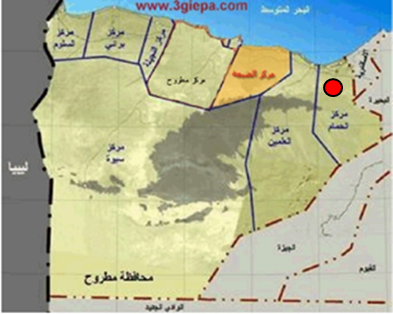
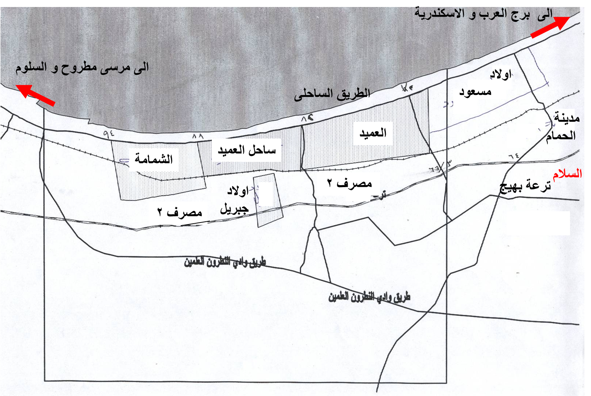
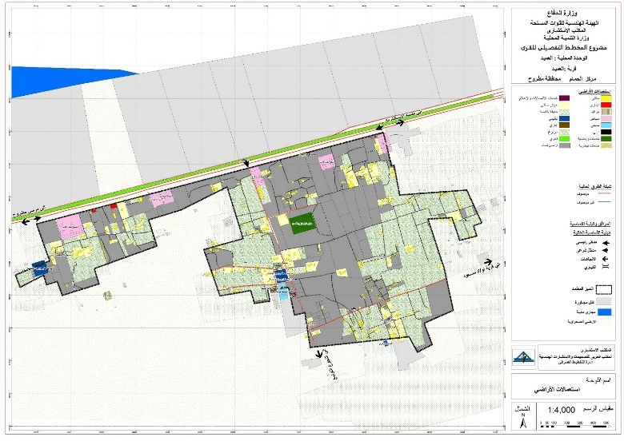

يتكون مركز الحمام من مدينة الحمام و 6 وحدات محلية تتكون كل منها من قرية واحدة: اولاد مسعود – العميد – ساحل العميد- الشمامة وتقع القرى الاربعة على الطريق الساحلى الاسكندرية – السلوم:السلام واولاد جبريل و تقع القريتين فى الداخل
الوحدة المحليه العميد التابعة لمركز الحمام بمحافظة مطروح وتتألف الوحده من قرية أم ومجموعة من العزب التوابع
تقع الوحدة المحلية في مركز الحمام حيث يحدها من الشمال البحر المتوسط ومن الجنوب محافظة الجيزة ومن الشرق أولاد مسعود، ومن الغرب وحدة ساحل العميد.
قرية العميد هي القري الام للوحدة المحلية العميد و تمثل قرية العميد المركز الرئيسي الإداري والخدمى للوحدة المحلية وتتالف من الكتلة الرئيسية للقرية ومجموعة من العزب التوابع.
تتمثل مداخل القرية فى مدخلين كالتالي:
المداخل الرئيسية: من الطريق الساحلى - أولاد مسعود المرصوف والمدخل الرئيسي للقرية بحالة جيدة.
المداخل الثانوية: مدخل من طريق وادى النطرون – العملين.